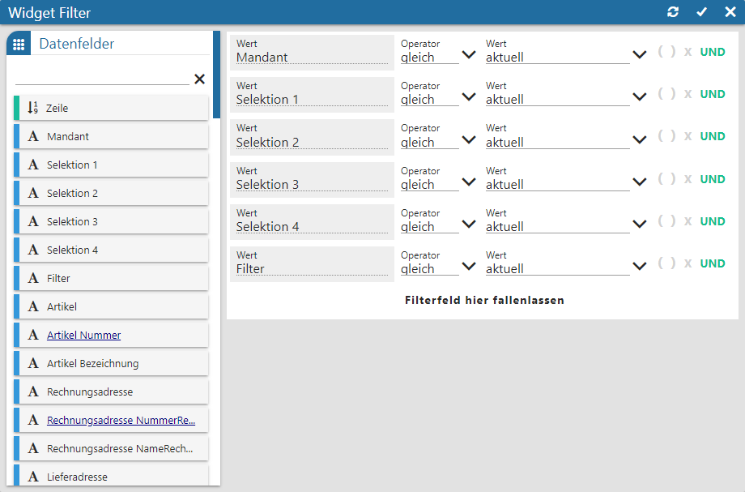
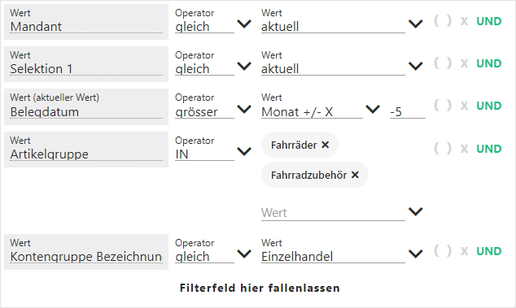
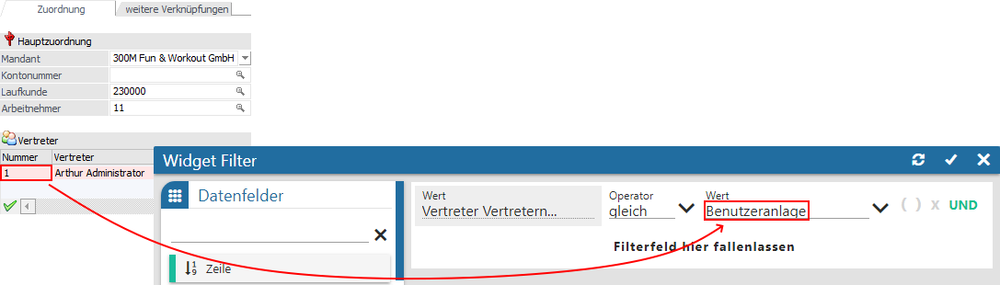

Mit Hilfe des Widget Filters kann die Datenquelle pro Widget nach frei definierbaren Kriterien eingeschränkt werden. Der Filter kann dabei über die Einstellungen des Widgets (Button "Widget Filter") oder über das Widget-Menü (Funktion "Widget Filter") jederzeit editiert werden. Bei den Widgets Datenquellen Info, Quickfilter und Quickfilter Info steht - entsprechend ihrer Funktion - der Widget Filter nicht zur Verfügung.
Achtung
Handelt es sich nicht um eine importiere Datenquelle, so werden die folgenden Selektionskriterien automatisch vorgegeben, wobei ein Editieren selbstverständlich möglich ist:
ü Mandant
Es wird durch die
Filterzeile "Mandant = aktuell" automatisch auf die Daten des aktuellen Mandaten
eingegrenzt.
ü Selektion 1 bis 4 / Filter
Es
wird automatisch auf die Daten jenes Snapshots eingegrenzt, über welchen der
Power Report ausgegeben wurde. Die Filterzeilen hierzu lauten "Selektion X =
aktuell" bzw. "Filter = aktuell".
Bei dem Einfügen eines Widgets einer importierten Datenquelle wird das Fenster hingegen immer automatisch geöffnet und keine Selektionskriterien vorgeschlagen!

Folgende Eingabefelder, Einstellungen und Informationen stehen zur Verfügung:
Datenfelder

Ø Tabelle "Datenfelder"
In dieser Tabelle werden alle Felder der Datenquelle dargestellt, welche per Drag & Drop in den Filterbereich übergeben werden können (Drop auf das Feld ""). Der Power Report unterscheidet hierbei nach den folgenden Datentypen:
ü - Alphanumerisch
Es handelt sich um ein
Feld mit alphanumerischen Inhalt.
ü  - Text
- Text
Es handelt sich um ein Feld mit
Langtext.
ü  - Bild (Grafik)
- Bild (Grafik)
Es handelt sind um ein
Feld mit einem Bild als Inhalt.
ü - Datum
Es handelt sich um ein Feld des
Typs "Datum". Bei solchen Feldern die Möglichkeit zur Verfügung gestellt, das
Datum nach bestimmten vordefinierten Gesichtspunkten zu selektieren (z.B.
"aktuelles Jahr"), eine fix Vorbelegung zu treffen (z.B. "Monat = 3") oder eine
klassische Datumseingabe zu nutzen. Die Definition erfolgt durch Anwahl des
Symbols , welches sich neben der
Beschreibung des Felds befindet. Hierdurch öffnet sich das folgende Auswahlmenü
(Standard = Eingabe des Datums; aktueller Wert = vordefinierte Bereiche; fixer
Wert = fixe Vorbelegung):
ü - Zahl (Measure)
Es handelt sich um ein
Feld mit numerischen Inhalt.
Hinweis
Mit Hilfe der Suchzeile kann über eine Volltextsuche nach Datenfeldern gesucht werden, wobei das %-Zeichen als Platzhalter verwendet werden kann.
Filterbereich

In diesem Bereich werden alle Selektionskriterien aufgeführt. Eine Änderung der Reihenfolge ist per Drag & Drop (Drag auf die Überschrift "Wert", "Operator" oder "Wert") möglich.
Ø Wert
In dieser Spalte wird der Name des Datenfelds angezeigt.
Hinweis
Bei Feldern des Typs "Datum" kann man über die Überschrift unterscheiden, ob es sich um eine klassische Eingabe eines Datums (Text lautet "Wert"), um die Auswahl einer Vorgabe (Text lautet "Wert (aktueller Wert)") oder um Angabe eines festen Zeitpunkts ("Wert (fixer Wert)") handelt.
Ø Operator
An dieser Stelle kann der Operator hinterlegt werden, wobei dieser Abhängig vom Datentyp des Felds ist. Bei den Operatoren "IN" und "NOT IN" können die einzelnen Werte nacheinander aus einer Auswahlliste übernommen werden.
Ø Wert
In der dritten Spalte wird der Suchbegriff hinterlegt, wobei in den meisten Fällen eine Auswahl zur Verfügung steht. Der Inhalt dieser Auswahl ist wiederum abhängig vom Datentypen des Datenfelds:
ü Alphanumerisch / Text / Bild
(Grafik)
Die Daten der Auswahl stammen in der Regel 1 zu 1 aus der
Datenquellen, wobei hier alle bisher getroffenen Selektionen ignoriert werden.
Des Weiteren werden bei bestimmten Feldern die Auswahl "Benutzeranlage" und /
oder "zuletzt verwendet" angeboten.
Auswahl "Benutzeranlage"
Wird eine Auswahl angeboten und handelt
es sich um ein Datenfeld mit Inhalt "WinLine Benutzer", "Konto", "Vertreter"
oder "Arbeitnehmer / Mitarbeiter", so steht zusätzlich der Eintrag
"Benutzeranlage" zur Verfügung. Mit Hilfe dieses Eintrags kann auf die Daten der
Benutzeranlage des aktuellen Benutzers zugegriffen werden, wodurch der Power
Report den Wert im Filter dynamisch setzt.
Als Operator bietet hierbei sich
in der Regel "gleich" oder "ungleich" an. Sollten in der Tabelle "Vertreter" der
Benutzeranlage mehrere Vertreter hinterlegt worden sein, so ist bei Datenfeldern
mit Inhalt "Vertreter" wiederum "IN" oder "NOT IN" zu empfehlen (ansonsten wird
automatisch der erste Vertreter verwendet).
Beispiel

Auswahl "zuletzt verwendet"
Wird eine Auswahl angeboten und handelt es sich um ein Datenfeld mit Inhalt "Konto", "Artikel", "Arbeitnehmer / Mitarbeiter" oder "Projekt", so steht zusätzlich der Eintrag "zuletzt verwendet" zur Verfügung. Mit Hilfe dieses Eintrags kann auf das zuletzt verwendete (aufgerufene) Objekt zugegriffen werden, wodurch der Power Report den Wert im Filter dynamisch setzt.
ü Datum
Bei Felder des Typs
"Datum" mit der Einstellung "aktueller Wert" werden unterschiedliche Zeitpunkte
angeboten, wobei die Ausgangsbasis immer "heute" ist. Eine Besonderheit stellen
die Vorgaben mit "+/- X" da. Bei diesen kann über eine weitere Eingabe der
Zeitpunkt dynamisch verschoben werden.
Beispiel
Es ist der 13.07.2025.
ü Woche +/- X "2" mit Operator "gleich" => 22.07.2025 bis einschließlich 28.07.2025
ü Woche +/- X "2" mit Operator "größer" => größer dem 27.07.2025
ü Woche +/- X "2" mit Operator "größer gleich" => größer dem 20.07.2025
ü Woche +/- X "2" mit Operator "kleiner" => kleiner dem 21.07.2025
ü Woche +/- X "2" mit Operator "kleiner gleich" => kleiner dem 28.07.2025
ü Monat +/- X "3" => Oktober
ü Jahr +/- X "-1" => 2024
ü Quartal +/- "0" => 3. Quartal
ü Zahl (Measure)
Eine Auswahl
steht bei Felder des Typs "Zahl (Measure)" nicht zur Verfügung.
Ø Klammer
Durch Anwahl der Icons  kann eine Klammerbildung gestartet
bzw. geschlossen werden. Aktive Klammern werden farbig dargestellt (
kann eine Klammerbildung gestartet
bzw. geschlossen werden. Aktive Klammern werden farbig dargestellt ( bzw.
bzw.  ).
).
Ø Verknüpfung
Über die Spalte "Verknüpfung" kann entschieden werden, wie die einzelnen Selektionskriterien miteinander verknüpft werden sollen. Hierfür stehen die folgenden Varianten zur Verfügung (per Mausklick änderbar):
ü UND
Wenn die Bedingungen mit
"UND" verknüpft werden, dann müssen beide Selektionskriterien zutreffen, damit
der Datensatz im Power Report berücksichtigt wird.
ü ODER
Wenn die Bedingungen mit
"ODER" verknüpft werden, dann muss eines der Kriterien zutreffen, egal wie viele
Kriterien hinterlegt wurden.
Buttons

Ø Aktualisierung
Mit Hilfe dieses Buttons wird der Filter gespeichert, direkt angewendet und das Fenster bleibt geöffnet.
Ø Ok
Durch Anwahl des Buttons "Ok" werden die Filtereinstellungen angewendet und das Fenster geschlossen.
Ø Ende
Durch Anwahl des Buttons "Ende" wird das Fenster geschlossen und nicht gespeicherte Änderungen verworfen.